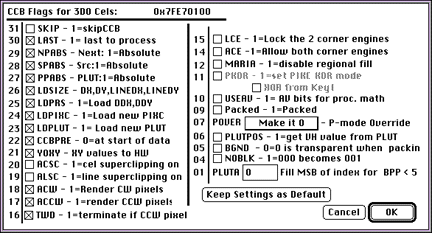

This section walks you through both methods.
Note: The 3DO Animator interface for creating custom settings is intended for a team of a programmer and an artist. Documentation explaining the flags is found in the 3DO Graphics Programmer's Guide
The Load CCB Settings dialog appears.
The CCB settings are automatically loaded and the file name appears in the CCB Loaded box.
To create custom CCB settings, follow these steps.
The Cel Parameters dialog appears.
The dialog provides access to other dialogs so you can define cel parameters. You cannot change the cel type, but you can set everything else.
The CCB Flags dialog appears (see Figure 1).
Each checkbox in the CCB Flags dialog corresponds to a flag for the cel control block (CCB) for the cel you are creating. In most cases, the Packed, BGND, and NOBLK options are the only relevant flags. For a detailed explanation of each of the flags, see the 3DO Graphics Programmer's Guide.

Figure 1: CCB Flags dialog.
You are returned to the 3DO Cel Parameters dialog.
The preamble identifies the type of data in the source data: packed or unpacked, coded or uncoded, the number of bits per pixel, and more. This information tells the cel engine how to process the cel source data. VCNT, Uncoded, REP8, and BPP are automatically set by the 3DO Animator.
The Horizontal Pixel Count (TLHPCNT) and WOFFSET are set automatically by 3DO Animator.